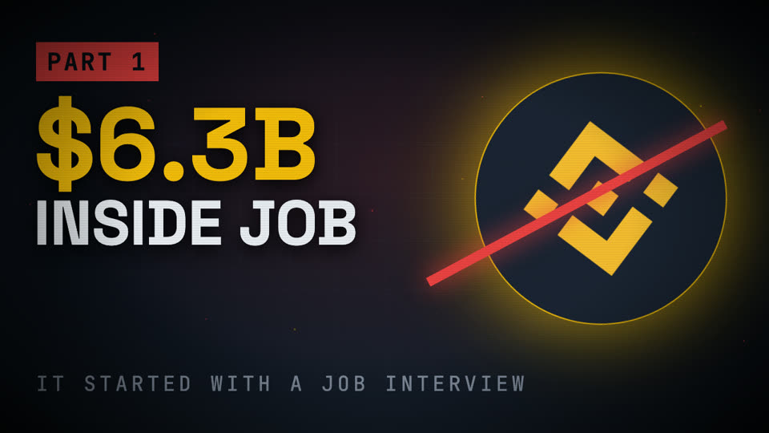
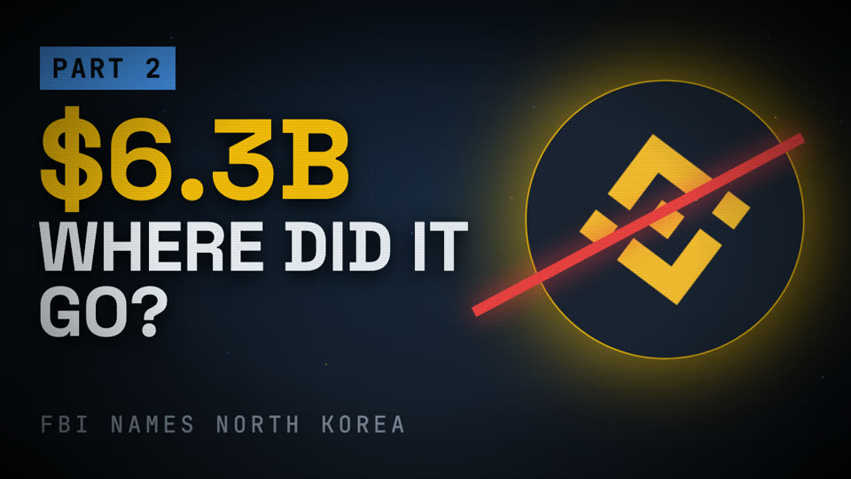
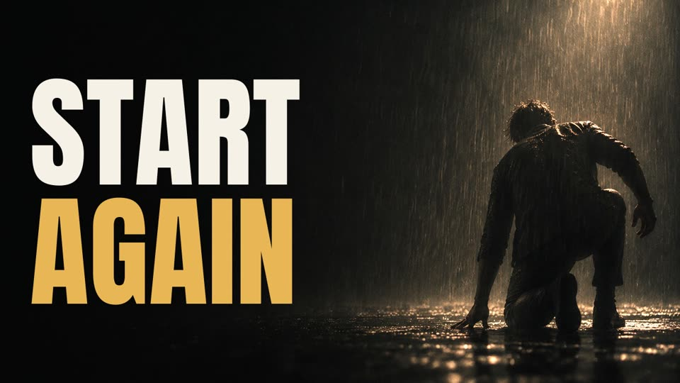
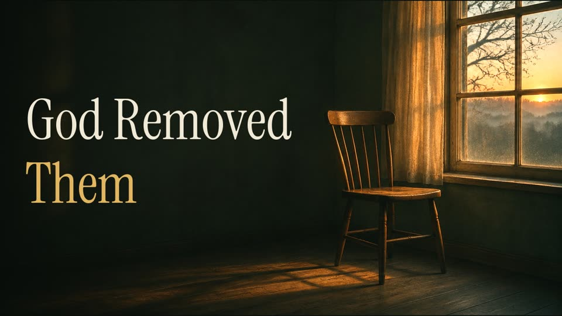

IkechukwuBenson.
I build AI agents that do real business work, make films with code, and have spent eight years selling and marketing in crypto.

Open to work. Start immediately.
Abuja, Nigeria · UTC+1 local time
AI automation engineer · Head of Marketing at PerfectRide
What are you hiring for?
Pick the role. You’ll get the short version, the three projects to look at first, and the CV written for that job.
AI and automation engineer
I design and build AI agents in Python and TypeScript, built to fail safely: rules run before any model call, money moves through one checked state machine, and every outside service has a mock so the tests run without keys.
- QUANTSAMA: multi-agent trading research with human approval, 913 tests.
- WhatsApp AI Sales Agent: two client setups, 41/41 tests.
- The 06:00 Shorts pipeline: news to finished video, unattended.
AI proposes. A human decides.
Position sizes come from volatility forecasts. Agents argue over each trade. Nothing reaches the market unless a human has armed the desk.
- Sizing is driven by walk-forward GARCH(1,1) volatility forecasts, with regime multipliers and a hard exposure ceiling.
- Proposal agents, a debate stage, a risk guardian and a backtester. On mainnet the guardian may only propose reduce-only exits; new entries are blocked in code.
- The approval queue refuses every approval until a human arms the desk from the dashboard. Agents never hold the arming credential.
- A scheduled cloud coding agent builds each phase as a pull request; each merged PR went through an AI security-review pass, with fixes re-tested before merge. 913 automated tests pass on the agents branch.
- Python
- FastAPI
- arch (GARCH)
- ccxt
- Hyperliquid
- React
- TypeScript
- Supabase
- pytest
How a trade idea moves
- Proposal agentsRead the market and suggest a trade
- DebateAgents argue for and against
- Risk guardianGARCH sizing, exposure ceiling, mainnet exits only
- Approval queueWaits, and refuses while the desk is not armed
- A humanArms the desk and approves, or not
A sales assistant that never sleeps.
An AI agent on a business’s WhatsApp line. It answers customers at any hour, knows the catalogue and prices, qualifies the lead, sends a payment link and hands over to a human.
- One configuration file per client (business.yaml) holds the catalogue, prices, tone and rules. The same code serves every client.
- Webhook signatures are verified: a tampered request gets a 401.
- 41 of 41 tests pass end to end on mocks, with zero credentials. Next step is Meta Business Verification and live keys.
- TypeScript
- Node.js
- Fastify
- Claude API
- WhatsApp Cloud API
- Paystack
- Zod
Sample conversation for a fictional client, written to show the flow.
Films made in code.
Long-form investigations and faith teachings, written, fact-checked, voiced and edited by me in Remotion (React). The thumbnails are mine too.




Also: The Billion-Dollar Lie (20:24, AI-generated host) and Memecoin Rug Pulls (6:52) with four Shorts. Uploads are private while under review; screeners on request.
- Scenes that follow the voice.A cue system finds each spoken phrase in a whisper.cpp transcript, so scenes re-time themselves when the voice-over speed changes.
- Fact-checked before recording.In one script the check caught an unsourced dollar figure and a finding credited to an outlet that could not be verified. Both were fixed and re-credited to primary sources.
- Feature-length on a laptop.20-minute films rendered on an 8 GB machine with resumable chunked renders. Masters at 1080p30, 40 Mbps, audio peaks below −1 dBFS.
- A channel in a week.For The Pruned Path: five long-form videos in the first week, with separate pipelines for teachings, speeches and compilations, and channel branding set through the YouTube API.
The 06:00 Shorts pipeline
Every morning a scheduled job makes a crypto news Short with no one at the keyboard, then waits for my approval.
06:00:02 lock acquired 06:00:09 rss: 14 stories, 3 kept 06:02:41 script + voice-over written 06:03:30 tts: kokoro, 0:52 06:09:12 remotion render 1080x1920 06:10:05 ai review: pass 06:11:20 youtube: uploaded private 06:11:21 lock released
Shape of a run, condensed for this page.
- Remotion
- FFmpeg
- whisper.cpp
- ElevenLabs
- Kokoro TTS
- ACE-Step music
- MoDA lip-sync
- YouTube Data API
- macOS launchd
Two more builds.
NaijaNexus
A marketplace for Nigerian craftspeople. Sellers upload photos and Claude Vision drafts the listing. Buyers pay into escrow.
Every order moves through one state machine, and every illegal move is rejected at a single point. Payments, AI and storage sit behind mockable adapters.
- TypeScript
- Express
- React
- Prisma
- PostgreSQL
- Claude Vision
- Paystack
- Docker
A team of AI agents
My own development setup: eight specialised agent roles with limits enforced by their tools.
Work moves from discovery to plan, approval, execution and verification. Model choice is routed by task cost, and parallel work runs in separate git worktrees.
How I check AI work.
AI writes fast and sounds sure of itself. My job is to know when it is wrong before a customer, a viewer or a trading account finds out.
- Rate it against a written spec.A separate AI reviewer checks finished work against the brief and returns confirmed or refuted. Nothing ships on the builder’s own word.
- Fact-check claim by claim.Every documentary script is checked against sources before a word is voiced.
- Put rules before the model.Fixed rules reject unsafe cases before any model call. The model never has the final say on money.
- Review AI-written code.Each AI-generated pull request goes through a security review; I decide merge or fix, and fixes are re-tested.
- Keep the evidence.Labelled JSONL logs, including rejected trading signals, so decisions can be checked statistically later.
Twelve years, from Mass Communication to AI.
- 2014Starts an OND in Mass Communication at Federal Polytechnic Bida
- 2016Graduates. Learns to write for an audience first
- 2018Marketing Manager at NiMEDix. Founds B-BenzHodling E-Payment
- 2021Moves to Dubai as an independent entrepreneur, UAE residence visa
- 2023Starts working as an AI growth and automation strategist
- 2024Founds PhoenixBot, an AI trading platform
- 2025Head of Marketing at PerfectRide
- 2026Anthropic certified. Builds QUANTSAMA, the WhatsApp agent and the film pipelines
- NowWest Africa Regional Coordinator for SAIS Events. Open to a full-time role
West Africa Regional Coordinator, SAIS Events
Nov 2026 to now
Partner · hosted-buyer trade expos, organiser based in NairobiRecruit serious Nigerian business delegates for AGROEXPO Izmir and AFROPLAST Cairo, where they meet investors and manufacturers in pre-arranged deal meetings. Built the outreach hub and an AI screening assistant for it.
AI Automation Engineer and Founder
2026 to now
Self-employed · Abuja, remoteDesign and build the projects on this page, from first plan to tested system. AI growth and automation strategist since 2023.
Head of Marketing, PerfectRide
Jan 2025 to now
Vehicle business investment platform · hybrid, Canada and NigeriaLead marketing for the platform, including a 47-second vertical promo video with an AI host for the STAKE product.
Sales and Marketing Manager, Cladex
Feb 2026 to now
Multichain crypto platform · part-timeMarketing strategy and sales.
Marketing Manager, NiMEDix
Jan 2018 to now
Health-tech and blockchain company · Abuja, hybridMarketing strategy and blockchain analysis. Co-founded the related BAS Network and Nimedix.care initiatives in healthcare.
Ventures and Web3.
Before I wrote code, I started companies and took crypto products into African markets.
B-BenzHodling E-Payment
Founder · 2018 to now
An e-payment venture built to bring crypto payments to everyday users across Africa.
PhoenixBot
Founder · 2024 to now
An AI-powered automated trading platform, at phoenixbot.io.
BAS Network and Nimedix.care
Co-founder · with NiMEDix
Blockchain initiatives in healthcare, aimed at real-world use.
TitanX, ZugaCoin, LFi, Orion
Growth consultant
Ecosystem strategy and African market expansion for Web3 projects.
Yieldium
Founder
A DeFi yield project with automated strategies.
MOONSIGNAL
Creator
A crypto education and investment community.
Toolkit.
AI and agents
- Claude API
- Tool use
- Multi-agent systems
- Prompt engineering
- LLM output rating
- Claude Code
- Speech-to-text
- Text-to-speech
Code and backend
- Python
- TypeScript
- SQL
- Bash
- FastAPI
- Fastify
- Express
- PostgreSQL
- Supabase
- Prisma
- Webhooks
Frontend and ops
- React
- Vite
- Tailwind
- Docker
- GitHub
- pytest
- Vitest
- Netlify
- Render
- launchd
Video and audio
- Remotion
- FFmpeg
- CapCut
- OBS Studio
- whisper.cpp
- ElevenLabs
- Kokoro TTS
- AI image and lip-sync
Growth and Web3
- Go-to-market
- Community on Telegram, X, WhatsApp
- Partnerships
- Sales funnels
- DeFi
- On-chain analysis
- Solana and EVM
Quant and data
- GARCH volatility
- Walk-forward validation
- Backtesting
- Brier-score calibration
- JSONL datasets
- ccxt
- Hyperliquid
About me.
I came to engineering from marketing, so I build with the customer in mind first. Since 2018 I’ve sold and promoted health-tech, crypto and mobility products.
Before engineering I was an entrepreneur: I founded a crypto e-payment venture in 2018, lived and worked in Dubai from 2021 to 2022, and have travelled to Kenya for business. I use AI coding agents as my main development tool, and I check their work with a separate review pass and automated tests before it ships.
Based inAbuja, Nigeria (UTC+1)
Open toUAE, Qatar, Saudi Arabia, Germany, Netherlands, Canada, or remote
Notice periodImmediate. Needs an employment visa for roles abroad.
Working hoursFull overlap with Europe, part of the US East Coast
LanguagesEnglish, full professional
SetupmacOS workstation, fibre broadband with mobile-data backup, power backup
EducationOND, Mass Communication, Federal Polytechnic Bida, 2014–2016
FormerUAE residence visa holder, Dubai 2021–2022
AI Fluency: Framework and Foundations · Anthropic, July 2026, delivered with University College Cork
Claude Code 101 · Anthropic, July 2026